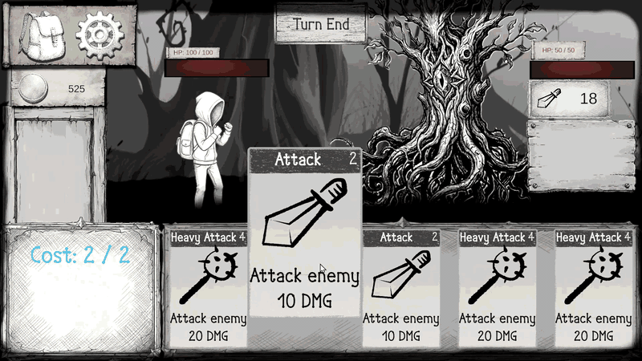

01한눈에 보기
Deck Forest는 횡스크롤 탐험과 턴제 카드 전투를 결합한 Unity 6 기반 2D 로그라이크로, 3인 팀이 1년 6개월간 만들어 학술제 우수상을 받았습니다.

| 수상 | 2026년도 제39회 컴퓨터융합학부 학술제 AI융합페스티벌 우수상 (16팀 중 5팀) |
|---|---|
| 기간 · 팀 | 1년 6개월 · 3인 (목원대학교 컴퓨터융합학부) |
| 내 역할 | 팀장 · 기획 · 클라이언트 개발(UI 위주) · 전체 코드 구조 설계 · AI 생성 코드 검증과 통합 |
| 기술 스택 | Unity 6 (6000.2.9f1), C#, UGUI, TextMeshPro, Input System, Audio Mixer |
| 규모 | 씬 16개 · C# 스크립트 53개(약 5,500줄) · 카드 11종 · 적 4종 |
| AI 도구 | Gemini(코드 초안·재검사), Higgsfield(UI·오브젝트 이미지 소스) |
02프로젝트 개요와 내 역할
플레이어는 횡스크롤 맵을 탐험하며 이벤트와 적을 만나고, 코스트를 쓰는 턴제 카드 전투로 진행한 뒤 보상 카드로 덱을 키웁니다.
- 탐험: 좌우 이동, 선택지 이벤트(체력·골드 증감), 미니맵으로 다음 방 종류 예고 (전투 70% · 휴식 20% · 보물 10%)
- 전투: 매 턴 코스트 +1(최대 10), 카드를 드래그해 사용, 턴 종료 시 공격 연출과 함께 피해 적용, 적의 다음 행동은 아이콘으로 미리 표시
- 성장: 승리 보상 카드 선택, 상점 구매·뽑기, 창고에서 덱과 가방 카드 교체
- 진행: 방을 5번 클리어하면 보스 방으로 진입하고 엔딩 화면으로 이어집니다
팀 구성
| 이름 | 역할 | 담당 |
|---|---|---|
| 김선우 (팀장) | 기획 · 클라이언트 | 게임 기획, UI 중심 클라이언트 개발, 전체 코드 구조 설계, AI 생성 코드 검증과 통합 |
| 안창민 | 클라이언트 | 클라이언트 개발 전반 |
| 김예림 | 디자인 · 그래픽 | 디자인과 그래픽 리소스, 그래픽 관련 코드 유지보수 |
03핵심 구현
데이터와 로직을 나눠 콘텐츠를 에셋으로 늘리고, 전투·UI·저장을 각각 매니저로 분리한 구조가 프로젝트의 중심입니다. 저는 전체 설계와 일부 구조를 맡았습니다.
1. ScriptableObject 기반 데이터 구조
- 설계 의도
- 카드와 적 수치를 코드 밖으로 빼서, 코드 수정 없이 에셋 추가만으로 콘텐츠를 늘리기 위해서입니다.
- 구현
CardData(코스트, 타입, 수치, 상태이상, 상점 가격, 이펙트 프리팹, 타격음)와EnemyData(체력, 공격·방어 수치 범위, 모션 스프라이트, 보스 여부)를ScriptableObject로 정의했습니다. 세이브에는 카드 대신 ID 목록을 저장하고, 불러올 때 카드 DB에서 복원합니다.- 규모
- 카드 11종, 적 4종(보스 1종)
2. 코루틴 기반 턴제 전투
- 설계 의도
- 카드 투척, 피격 모션, 피해 계산, 적 행동이 정해진 순서로 이어지는 연출을 하나의 흐름으로 제어하기 위해서입니다.
- 구현
BattleManager의ProcessTurnSequence()코루틴이 카드별 투척 연출, 피격 모션과 효과음, 피해 계산, 적 행동을 순서대로 실행합니다. 연출 중에는isTurnProcessing플래그로 입력을 막고, 덱은 Fisher–Yates 방식으로 섞습니다.- 피해 공식
- (기본 피해 + 이번 턴 공격 카드 합 + 근력) × 1.5 (적이 취약 상태일 때)
- 적 AI
- 매 턴 공격 또는 방어를 무작위로 고르고, 수치 범위 안의 값을 의도(Intent) 아이콘으로 미리 보여줍니다.
3. 카드 UI 인터랙션
- 설계 의도
- 손패, 사용 기록, 인벤토리, 도감에서 같은 카드 프리팹을 재사용해 UI 중복을 줄이기 위해서입니다.
- 구현
CardController가IBeginDragHandler,IDragHandler,IEndDragHandler를 구현해 드래그 앤 드롭을 처리합니다. 드롭 존 위에서 놓고 코스트가 충분할 때만 카드가 사용되고, 아니면 원래 자리로 돌아갑니다. 호버 시 카드가 확대되며 위로 올라오고, 코스트가 부족한 카드는 회색으로 표시됩니다. 모드 플래그로 손패, 사용 기록, 인벤토리, 도감의 4가지 용도를 구분합니다.
4. 씬 간 상태 유지와 저장
- 설계 의도
- 16개 씬을 오가도 HP, 골드, 덱이 유지되고, 씬 종류에 따라 UI가 자동으로 바뀌게 하기 위해서입니다.
- 구현
GameManager,StageUIManager,GlobalSceneFader를 싱글톤과DontDestroyOnLoad로 유지하고,SceneManager.sceneLoaded이벤트로 전투 UI와 탐험 UI를 전환합니다.JsonUtility로 HP, 골드, 덱, 가방, 창고, 도감을persistentDataPath에 저장하며, 저장 파일이 없으면 시작 덱을 지급합니다.
5. 연출과 상점·창고
- 뽑기 연출: 효과음 길이(
AudioClip.length)를 상자 이미지 3장에 나눠 페이드 타이밍을 맞췄습니다. - 창고: 덱과 가방 카드를 교체할 때
SmoothStep보간으로 위치를 바꾸는 애니메이션을 넣었습니다. - 전투 모션: 예비동작, 돌진, 복귀 3단계 공격 모션과 넉백·흔들림 피격 모션을 코루틴으로 구현하고, 거리·각도·시간을 인스펙터에서 조절할 수 있게 했습니다.
04AI 활용 방식
구조 설계와 최종 검증은 직접 하고, Gemini에는 개별 기능의 초안과 재검사를 맡기는 순서로 작업했습니다.
- 전체 코드 구조와 매니저 간 역할을 직접 설계
- Gemini로 개별 기능 코드 초안 작성
- 연동되는 스크립트와 맞는지 직접 검사하고 수정
- 수정본을 다시 Gemini에 검사시켜 누락이나 오류 확인
오류 수정과 유지보수도 같은 순서로 진행했습니다. UI·오브젝트 이미지 소스는 Higgsfield로 만들어 에셋스토어의 흑백 잉크 톤 아트와 맞췄습니다.
CASE상점 매니저 통합
- 문제
- Gemini로 만든
StoreManager초안을 그대로 쓰면 프로젝트의GameManager데이터 구조와 연동되지 않았습니다. - 직접 수정
- 연동되는 코드의 변수명과 코루틴 방식, 그리고
GameManager에 기록된 카드 획득 목록(collectionHistory)을 불러오는 부분을 수정했습니다. - 적용 구조
RefreshShopItems()는 획득 기록이 있는 카드 ID만 후보로 삼고, 기록이 없으면 전체 카드 DB로 대체합니다. 중복 없이 최대 3장을 뽑아 슬롯에 진열합니다.- 결과
- 수정 후 상점이 다른 매니저와 연동 오류 없이 동작했습니다.
05트러블슈팅
1. 카드 투척 연출에서 빈 하얀 사각형이 날아가는 문제
- 문제
- 턴 종료 시 사용한 카드가 적에게 날아가는 연출에서 카드 그림 대신 빈 하얀 사각형이 표시됐습니다.
- 원인
- 투척 연출 오브젝트에 사용한 카드의 데이터(틀·그림·이름·코스트)가 세팅되지 않아 빈
Image만 보였습니다. - 해결
- 투척 연출 전용 UI 프리팹(
uiFlyingCardPrefab)을 따로 만들어 적용하고,CardDisplay로 이번 턴에 사용한 카드 데이터를 그대로 세팅했습니다. 카드를 쓰지 않은 턴에는 투척 연출을 생략하고, 투척 애니메이션은 3종 중 무작위로 재생합니다. - 결과
- 실제로 사용한 카드가 사용한 장수만큼 정확히 날아갑니다.
2. 공격·피격 모션 스프라이트가 대기 애니메이션에 덮어씌워지는 문제
- 문제
- 공격·피격 순간 바꾼 스프라이트가 곧바로 대기 모션으로 돌아가 모션이 보이지 않았습니다.
- 원인
- 플레이 화면을 직접 확인하며 추적한 결과,
Animator가 매 프레임 대기 애니메이션 스프라이트를 덮어쓰고 있었습니다. - 해결
- 모션 코루틴이 실행되는 동안
Animator를 비활성화하고, 모션이 끝나면 원래 상태로 복구했습니다. - 결과
- 예비동작, 돌진, 복귀의 코드 기반 모션이 의도대로 재생됩니다.
06회고와 개선 계획
한 사이클(탐험, 전투, 보상, 상점·창고, 저장)은 완성했고, 코드를 다시 읽으며 아래 한계를 확인해 개선 항목으로 정리했습니다.
| 한계 | 개선 방향 |
|---|---|
| 사용한 카드를 다시 섞는 버림 더미가 없어 시작 덱 8장이 전투 후반에 바닥남 | 버림 더미와 재셔플 도입 |
| 카드 설명문과 실제 수치가 3장에서 다름 | 설명문을 수치에서 자동 생성 |
| 피해 처리가 여러 스크립트에 나뉘어 있고 씬 이름이 문자열로 흐름 | 피해 처리 경로 일원화, 씬 이름 상수화 |
| 휴식·보물 방이 미니맵 아이콘만 반영되고 실제 콘텐츠가 없음 | 휴식·보물 방 콘텐츠 연결 |
| 카드 효과가 타입과 필드 방식이라 늘어날수록 데이터 클래스가 비대해짐 | 효과를 목록으로 조합하는 구조로 확장 |
07링크
코드와 시연 영상은 GitHub 저장소에서 바로 확인할 수 있습니다.
| GitHub 저장소 | github.com/hodino/Deck-Forest |
|---|---|
| 시연 영상 | 저장소 첫 화면에서 재생 (1분 49초) |
| 전투 시연 GIF | battle.gif |
| 핵심 코드 | BattleManager.cs · CardController.cs · GameManager.cs · StoreManager.cs |